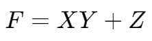
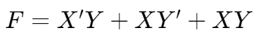
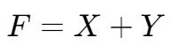

卡诺图 | Karnaugh maps
通过图形化方式较为直观地辅助简化电路表达式。
两变量到四变量的卡诺图示例：

逻辑函数到卡诺图

注意
卡诺图中使用 Gray Code，即 00, 01, 11, 10
这样可以使卡诺图中每个相邻的格子只有一位不同。
 对应的卡诺图如下：

一个例子
卡诺图的使用
画圈的三点注意⚠️：
- 圈出相邻的“1”，只能圈成矩形并且只能圈 2n 个格子
- 优先圈大的格子，由大圈到小
- 让每个“1”都至少被圈到一次
画完圈后，每个圈对应一个 Product Term，将每个圈对应的 Term 相加即为简化后的逻辑函数。
原函数：

简化后函数：
另一个例子

还不懂？再看看这个例子
Don't Care Conditions
在一些时候，真值表中的一些输入组合可以不用考虑。
对于这些输入组合，其对应的卡诺图格子可以不被圈到。

多输出电路
对于多输出电路，化简步骤如下：
- 画出每个输出对应的卡诺图
- 找出在多张卡诺图中均为 1 的格子
- 对于每张卡诺图，排除公共项后进行化简
- 对于每张卡诺图的化简结果，加上公共项的单独化简结果

使用 NAND 和 NOR 门代替 AND 和 OR 门
可以使用与非,,代替非 + 或,,。
由于 NAND(NOR) 门比 AND(OR) 门更简单，使用 NAND(NOR) 门代替 AND(OR) 门能够简化电路：